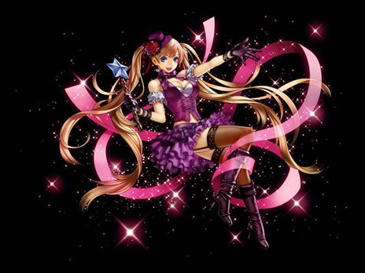

| エンターテイナー |
|  |
| 華麗なる変身 |
|
<情報>
<持続時間>
- ローズガーデン内で完全な変身
<説明>
- ローズガーデン範囲内にいると変身スキルが解除されない
<補足>
ローズガーデン範囲内では、ブレストファイア/ビッグサービス/ライトニングワインダー（サンダーボルトワインダー）/花の乙女スペシャル（花の乙女デラックス）/ガールズパラダイスを使用してもプリンセスに変身しない。 |
<スキルタイプ>
専用パッシブスキル |
<前提スキル>
- なし |
<パワーアップ形態>
- なし |
| ウルトラスーパーノヴァ |
|
<情報>
- スキル難易度 5
- 必要CP 120
- 消費CP [n]
- 獲得CP [n]
<攻撃関連>
- ◆ 光ダメージ [n]~[n]
- 攻撃速度 1回当 1.87秒
<説明>
- 空から落ちてくる流れ星が一定範囲内の敵に三回打撃を与える。一定確率ですべての低下系状態異常にかかる |
<スキルタイプ>
専用強化スキル |
<前提スキル>
- ウルトラノヴァ Lv50 |
<パワーアップ形態>
- 威力, 範囲, 発動確率, 低下量 |
| スキルLv |
1（+0） |
1（+1） |
1（+2） |
1（+3） |
1（+4） |
1（+5） |
| 消費CP |
380 |
386 |
392 |
398 |
404 |
410 |
| 獲得CP |
150 |
153 |
156 |
159 |
162 |
165 |
| 光ダメージ |
1〜501 |
1〜511 |
1〜521 |
1〜531 |
1〜541 |
1〜551 |
| 攻撃回数 |
3 |
| 低下系状態異常発動確率（％） |
50 |
50.5 |
51 |
51.5 |
52 |
52.5 |
| 持続時間（秒） |
15 |
| 攻撃/防御力低下（％） |
60 |
61 |
62 |
63 |
64 |
65 |
| 命中/回避率低下（％） |
25 |
25.4 |
25.8 |
26.2 |
26.6 |
27 |
| 攻撃/移動速度低下（％） |
35 |
35.5 |
36 |
36.5 |
37 |
37.5 |
| 魔法抵抗低下（％） |
50 |
51 |
52 |
53 |
54 |
55 |
| 集中力低下（％） |
25 |
| 最大射程距離（m） |
武器射程距離×5 |
| 効果範囲（m） |
4.5 |
4.52 |
4.54 |
5.56 |
5.58 |
4.6 |
| 花の乙女デラックス |
|
<情報>
- スキル難易度 4
- 必要CP 60
- 消費CP [n]
- 獲得CP [n]
- 敵の攻撃無視
<攻撃関連>
- ◆ 光ダメージ [n]~[n]x[n]
- 攻撃速度 1回当 2.50秒
<説明>
- 変身を繰り返して光の破片を飛ばし周囲の敵を攻撃する。攻撃が終わったらプリンセスに戻る |
<スキルタイプ>
強化スキル |
<前提スキル>
- 花の乙女スペシャル Lv50 |
<パワーアップ形態>
- 威力, 範囲, ,発動確率, 攻撃回数 |
| スキルLv |
1（+0） |
1（+1） |
1（+2） |
1（+3） |
1（+4） |
1（+5） |
| 消費CP |
410 |
417 |
424 |
431 |
438 |
445 |
| 獲得CP |
160 |
161 |
162 |
163 |
164 |
165 |
| 光ダメージ |
45〜445 |
45〜453 |
45〜461 |
45〜469 |
45〜477 |
45〜485 |
| 混乱確率（％） |
75 |
76 |
77 |
78 |
79 |
80 |
| 混乱持続時間（秒） |
25 |
| スタン確率（％） |
37 |
37.5 |
38 |
38.5 |
39 |
39.5 |
| スタン持続時間（秒） |
4 |
| 攻撃回数 |
4 |
| 持続時間（秒） |
25 |
| 効果範囲（m） |
6.5 |
6.54 |
6.58 |
6.62 |
6.66 |
6.7 |
| サンダーボルトワインダー |
|
<情報>
- スキル難易度 3
- 必要CP 30
- 消費CP [n]
- 獲得CP [n]
- 敵の攻撃無視
- 対象を 10秒間、感電状態にする（発動確率：100％）
<攻撃関連>
- ◆ 光ダメージ [n]~[n]x15
- 攻撃速度 1回当 2.50秒
<説明>
- 変身時の回転を利用して電気を発散。周りの敵へ放射状に稲妻が飛ぶ。サンダーボルトに当った敵は感電する。放電後にはプリンセスに戻る。
<補足>
感電状態の敵は10秒間、攻撃を受けるたびにダメージの10％の追加感電ダメージを受ける。 |
<スキルタイプ>
強化スキル |
<前提スキル>
- ライトニングワインダー Lv50 |
<パワーアップ形態>
- 威力, 範囲, 攻撃回数 |
| スキルLv |
1（+0） |
1（+1） |
1（+2） |
1（+3） |
1（+4） |
1（+5） |
| 消費CP |
280 |
285 |
290 |
295 |
300 |
305 |
| 獲得CP |
56 |
58 |
60 |
62 |
64 |
66 |
| 光ダメージ |
15〜265 |
15〜270 |
15〜275 |
15〜280 |
15〜285 |
15〜290 |
| 攻撃回数 |
15 |
| 効果範囲（m） |
6.5 |
6.58 |
6.66 |
6.74 |
6.82 |
6.9 |